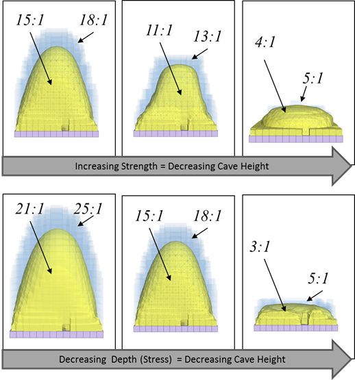
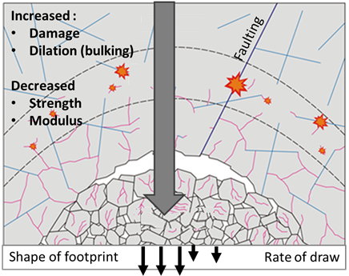
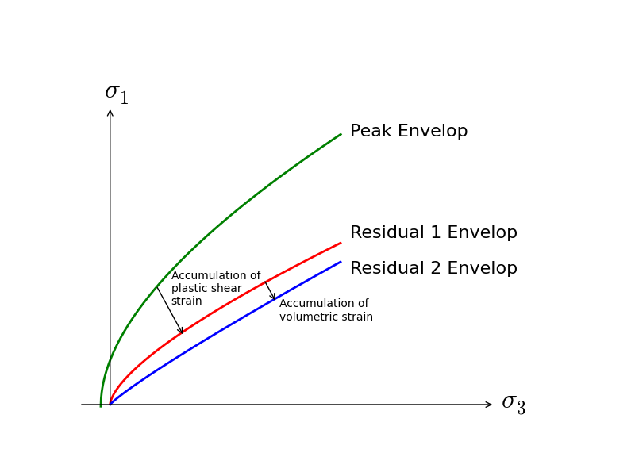
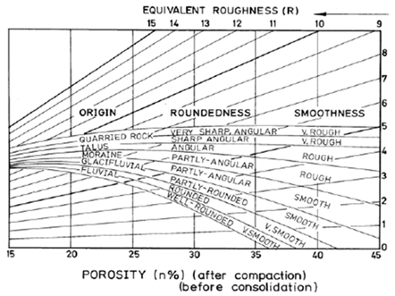
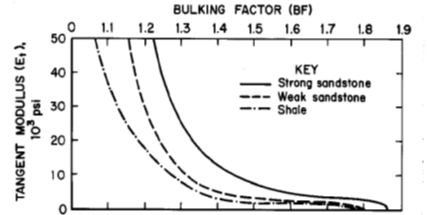
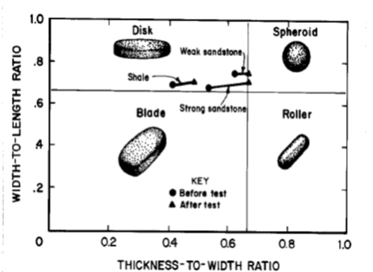
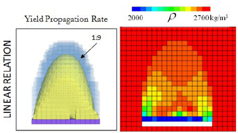
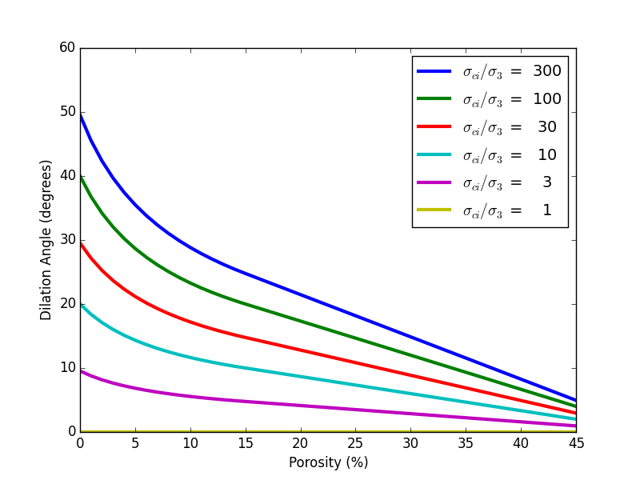

IMASS 模型
IMASS（Itasca 高级应变软化模型）本构模型是为表示岩体对应力变化的响应（即岩体屈服、模量软化、密度调整、剪胀、剪胀关闭、性质按网格单元尺寸缩放、黏聚力弱化、拉伸弱化与摩擦强化）而开发的。该本构模型基于应变软化材料模型建立，其应变相关性质经调整以反映诱发应力变化所引起的剪胀与扩容影响。
崩落力学
崩落可由两种因素引起：重力与应力。崩落机制取决于诱发应力、岩体强度与岩体不连续面的性质（方位/延展性）及强度之间的关系（Brown，2003）。
当崩落拱顶中的应力超过岩体强度时发生应力崩落。重力崩落的特征是原位应力与开采诱发应力都较低，可用简单运动学及节理强度参数（黏聚力、拉伸与摩擦）的知识预测。可预期重力诱发的散落会在崩落侧壁以滑动机制发生，而在高度破裂的崩落拱顶（顶板）以拉伸破坏机制发生。
当崩落拱顶中形成稳定拱时可停止崩落。此时诱发应力不超过完整岩桥的强度，或无法使节理活动。
Sainsbury（2010）此前研究了原位强度与应力条件对崩落传播的影响，其中对一个概念性崩落矿山的生产进行了模拟。与强度和应力有关的部分结果汇总于 图 1（Figure 1）。


图 1：岩体强度与原位应力对崩落传播高度影响的模拟结果。
这些结果表明崩落传播受强度与应力强烈影响：岩体强度越低、应力越大，传播高度越大。基于这些结果以及 Board 与 Pierce（2009）概述的概念性崩落机制，可以明确：崩落穿过原位岩体的速率与形态将受开采情景（位置与速率）以及现场岩土条件（岩体行为与原位应力）影响。
Pierce（2010）此前定义了影响岩体可崩落性的六个关键因素。它们示意于 图 2（Figure 2），包括以下内容。


图 2：Pierce（2010）所定义影响可崩落性的六个关键因素的示意图。
黏聚力与拉伸弱化：崩落过程中岩体强度从原位峰值降低到能代表崩落岩体状态的更低残余值。这一总体响应常称为“应变软化”过程，是应变相关材料性质的结果。
峰值后脆性：强度由峰值降至残余的速率称为脆性。随持续加载仍保持峰值强度的岩石称为理想塑性（延性）岩石。超过峰值强度后强度瞬时降至残余性质的岩体称为理想脆性岩体。一般而言，脆性岩体比延性岩体更易崩落。
模量软化：崩落过程中，随着完整岩块破裂、分离并在屈服与活动过程中旋转，岩体体积增大。伴随这种扩容，模量预期会下降。表示刚度的降低对于评估崩落周边不断演化的应力状态至关重要，因为随着岩体剪胀/扩容，其承载应力的潜力下降。
剪胀性状：剪胀是岩石在剪切畸变时发生的体积变化。准确评估与表示崩落过程中节理岩体的剪胀性状，对于准确预测塑性变形期间正确的体积增大至关重要。这将影响质量平衡计算以及崩落穿过各围压水平的传播。
岩体结构（断层、节理）：地质结构对沉降与崩落的影响被公认很重要。陡倾断层的存在可使崩落角在其正常值之前终止。若缓倾断层与正在崩落的岩柱相交，则地表沉降的横向范围可向外扩展至断层与地表相交处。Brown 与 Trollope（1970）用试验数据表明：即便岩体结构与岩土力学性质都利于滑移，高的水平原位应力也可能抑制岩体破坏，从而阻止自然崩落的起始与发展。
放矿计划：Laubscher（1990，1994）此前指出放矿速率与开采底面形状会影响岩体的可崩落性。
本构表述
IMASS 中峰值 Hoek-Brown 包络的形状（图 3（Figure 3））由以下方程定义（Hoek 等，2002）：
其中 \(\sigma_1\) 与 \(\sigma_3\) 分别为最大与最小主应力（本模型表述中压缩为正）；\(\sigma_{ci}\) 为完整岩石的无侧限抗压强度；\(m_b\)、\(s\)、\(a\) 为岩体材料常数，它们是 \(m_i\)（完整岩石的材料常数）与 \(GSI\)（地质强度指标）的函数：
岩体整体强度可估算（Hoek 等 2002）为
残余 Hoek-Brown 包络的形状与公式 (1) 相同，但 \(m_b\)、\(s\)、\(a\) 取相应的残余值（图 3（Figure 3））。


图 3：IMASS 本构模型强度包络。
完整岩石杨氏模量（\(E_i\)）用于计算岩体杨氏模量（\(E_{rm}\)），采用 Hoek 与 Diederichs（2006）控制岩体弹性行为的公式：
泊松比定义为 GSI 的函数，即：
岩体的体积模量与剪切模量按下式计算：
扩容因子或体积应变增量（VSI）定义为：
其中 \(\Delta V\) 为体积变化（正为膨胀），\(V_i\) 为初始体积，\(n\) 为孔隙率。对未扰动、未扩容的岩体，初始扩容因子通常设为零。当扩容因子达到用户定义的最大值时剪胀关闭，以反映岩体不能无限扩容。
对于遍布节理，抗拉强度、黏聚力与摩擦角控制屈服包络的形状。倾角与倾向设为与该结构面或节理相同，以表示真实倾角与倾向。
黏聚力弱化
IMASS 本构模型中的强度弱化由三个 Hoek-Brown 强度包络定义，如 图 3（Figure 3） 所示。峰值强度包络（绿色曲线）的参数 \(m_b\)、\(s\) 与 \(a\)（IMASS 中为 calc_stren_mb、calc_stren_s 与 calc_stren_a）由基于 GSI（in_stren_gsi）与上述完整岩石参数 \(\sigma_{ci}\) 与 \(m_i\)（in_stren_ucsi 与 in_stren_mi）的经典 Hoek-Brown 方程计算，见公式 (1) 至 (4)。残余强度包络（红色与蓝色曲线）的 Hoek-Brown 参数按近似堆石材料 Barton 抗剪强度计算。Barton（2008）的堆石抗剪强度估算由下式给出：
其中 \(\tau\) 为抗剪强度，\(\sigma_n\) 为法向应力，\(R\) 为等效粗糙度（图 4（Figure 4）），\(s\) 为岩块强度，\(\phi_b\)（in_weak_phib）为岩块的基本摩擦角。


图 4：基于孔隙率与碎块圆度/光滑度的岩块集合体等效粗糙度（Barton 2008）。
第一条残余强度包络（红色曲线——本文档中称为残余 1 包络）表示发挥的后峰值强度。此时假定岩体已经历破裂，但所生成的岩块仍完全咬合，因此孔隙率视为零。
第二条残余强度包络（蓝色曲线——本文档中称为残余 2 包络）表示真正的岩体残余强度。此时岩块咬合程度最低、孔隙率最大（假定最大孔隙率 40%）。理想情况下，第一与第二残余包络描述的是咬合程度不同的无黏聚力理想摩擦材料的行为。
IMASS 中实现的公式 (1) 的 Hoek-Brown 近似假定碎块圆度在扩容过程中从极尖锐棱角过渡到部分棱角，对应 图 4（Figure 4） 中 Barton（2008）诺模图上的孔隙率 15% 到 45%。
由基于孔隙率与圆度的诺模图计算 \(R\) 的过程可用以下公式近似：
其中 \(n\) 为孔隙率，\(R_i\) 为圆度指标，\(R_i=0\) 对应部分圆滑/光滑块体；\(R_i=1\) 对应棱角/粗糙块体；\(R_i=2\) 对应极尖锐棱角/极粗糙块体。
Barton 公式给出的强度可用 Hoek-Brown 包络按以下公式近似：
其中 \(\phi_b\) 以度计，默认值 30 度；\(n_{max}\) 为 Barton 诺模图中所考虑的最大孔隙率，45%。对残余 1（红色曲线），假定孔隙率为 0，给出 \(a_{r,1}\) = 0.6。对残余 2（蓝色曲线），假定孔隙率为 45% 且 \(R_i\) = 2，给出 \(a_{r,2}\) = 0.85。
发生屈服时，黏聚力随累积塑性剪应变（偏塑性应变张量的第二不变量）自峰值面向残余 1 线性弱化。临界剪应变定义为使岩体黏聚力自峰值降至零所需的总塑性剪应变。此时岩体处于残余 1 强度。临界塑性应变越小，岩体越脆。遗憾的是，对达到残余强度所需的临界塑性剪应变人们知之甚少，尤其是在岩体尺度上，可供建模取值选用的准则极少。
关于这些效应可作一些概括。例如质量较高的岩体（GSI 较高）、参与破坏过程的完整岩石体积较大，往往表现得更为脆性，从而临界应变值较低。相反，质量较低的岩体（GSI 较低）、裂隙频率较高，往往表现得更为延性，从而临界应变值较大。临界应变与 GSI 之间关系的估计值来自 MMT 项目中对洞穴及其他洞室岩体破坏的反分析（Lorig 与 Pierce 2000）。该估计为描述崩落模拟中所用应变软化程度提供了起点：
其中 \(Z\) 为网格单元尺寸，通常用网格单元体积的立方根表示；\(M\) 为乘子，默认值 1.0，用户可赋予不同值。
该关系中出现网格单元尺寸，反映了在剪切往往被分辨为约一个网格单元厚的带的连续体模型中，临界应变参数与网格单元尺寸相关。
把 Hoek-Brown 曲线拟合到 Barton 抗剪强度准则，可能导致在主应力空间中相对较高围压下强度包络相互交叉。发生这种情况时，IMASS 规定残余 2 包络以残余 1 包络为上界，残余 1 包络以峰值包络为上界。
拉伸弱化
拉伸弱化可通过两种不同机制发生。剪切屈服期间新裂隙的发展预期会导致拉伸弱化；因此每个网格单元的拉伸强度取以下两者的较小值：i) 峰值拉伸强度；ii) 由当前局部网格单元应力处破坏包络切线在 \(\sigma_3\) 上的截距算得的拉伸强度。不过，一旦某网格单元达到其峰值拉伸强度，即认为它以理想脆性方式永久弱化至零拉伸强度（即不再依据强度包络切线的投影检查）。
模量软化
拉伸弱化可通过两种不同机制发生。剪切屈服期间新裂隙的发展预期会导致拉伸弱化；因此每个网格单元的拉伸强度取以下两者的较小值：i) 峰值拉伸强度；ii) 由当前局部网格单元应力处破坏包络切线在 \(\sigma_3\) 上的截距算得的拉伸强度。不过，一旦某网格单元达到其峰值拉伸强度，即认为它以理想脆性方式永久弱化至零拉伸强度（即不再依据强度包络切线的投影检查）。
岩体因剪切或拉伸而扩容时，预期其模量会下降。为计入应力自扩容区向周围岩体转移，必须表示这种下降。此外还须允许扩容区承受转回的应力时发生模量硬化（引起再压密）。
Pappas 与 Mark（1993）的室内试验结果（图 5（Figure 5））表明，岩石模量随扩容增大而非线性下降，且模量变化速率是碎块形状与完整强度的函数。基于这些试验结果，他们建立了一系列公式，可用于把模量估算为扩容因子（BF）、完整岩块的单轴抗压强度（UCS，单位为 psi）与碎块长宽比的函数（表 1（Table 1））。注意 Pappas 与 Mark 对扩容因子（BF）的定义与崩落中通常所用不同：BF = 1 + 破碎岩石扩容因子（此处记为 B）。图 6（Figure 6） 所示图表可用于估算厚宽（长宽）比（IMASS 中取为 0.6）。


图 5：Pappas 与 Mark（1993）所试验全部岩型的最佳拟合切线模量（psi）对孔隙比。本图中 y 轴（模量）上限 50000 psi 等于 345 MPa；x 轴（孔隙比）下限 0.9 相当于孔隙率 47%。
| BF = 1.25 | \(E_t = 2.49 X_1 + 41200 X_2 - 24800\) |
| BF = 1.30 | \(E_t = 1.76 X_1 + 23800 X_2 - 15700\) |
| BF = 1.25 | \(E_t = 1.32 X_1 + 16300 X_2 - 11400\) |
| BF = 1.40 | \(E_t = 0.933 X_1 + 11300 X_2 - 7900\) |
| BF = 1.50 | \(E_t = 0.568 X_1 + 6900 X_2 - 500\) |
注意
这基于对不同扩容因子（BF）、完整强度与碎块形状材料的室内固结仪试验。\(X_1\) 为完整岩块的单轴抗压强度（UCS，单位 psi）；\(X_2\) 为碎块的厚宽（长宽）比。


图 6：Pappas 与 Mark（1993）关于碎块厚宽比估算的图表。
模拟过程中，各网格单元内破碎岩石扩容因子由其体积应变给出。若破碎岩石扩容因子大于 0.25，则按用户定义的 UCS、形状因子（IMASS 中为 0.6）与 BF（崩落岩石扩容因子 + 1）用 Pappas 与 Mark 方程建立该网格单元的新切线模量。对小于 0.25 的破碎岩石扩容因子，切线模量通过在原位岩体模量与对应扩容因子 0.25 的 Pappas 与 Mark 模量之间插值计算。##图 9## 至 ##图 11## 以图形形式示出这些关系随初始模量、UCS 与形状因子的变化。由于模量通过基于网格单元的体积应变持续更新，因此既可实现模量软化（扩容期间）也可实现模量硬化（例如崩落采空或未放矿部分再压密期间）。
Bulking
在崩落等开采作业中，岩体因剪切剪胀或拉伸体积膨胀而体积增大（扩容）。因此在崩落数值模型中指定剪胀角很重要，因为它控制剪切过程中的扩容速率，而扩容是推进或差异放矿（崩落中）的自然结果。图 7（Figure 7） 示出模型中两种扩容机制同时作用时活动区内非均匀扩容的情况。


图 7：活动区内的非均匀扩容（Sainsbury 2010）。
Dilation
IMASS 中剪胀有两个选项。
第一种选择是输入正的常剪胀角作为标准材料性质（in_bulking_dil > 0）。默认赋值采用第一种选择，依据 Hoek 与 Brown（1997）的建议取 in_bulking_dil = 10（度）。第二种选择（输入负的 in_bulking_dil）是采用随当前孔隙率与当前围压（具体为 \(\sigma_{ci}/\sigma_3\) 的当前比值）而变的演化剪胀角。如 图 8（Figure 8） 所示，在该分段剪胀选项中，零孔隙率处的剪胀角取自粘结块体模型（BBM）分析（Garza-Cruz 等 2019）。孔隙率 15% 到 45% 之间的线性段反映 Barton 对堆石摩擦角近似的剪胀部分。最后，一条随孔隙率衰减的函数连接孔隙率 0 到 15% 之间的两段，确保模型两段（\(n\) < 15% 与 \(n\) > 15%）在其相接处的斜率匹配。
无论采用哪种剪胀选项，当达到用户定义的最大扩容因子（\(VSI_{max}\)）时剪胀角设为零。这可防止网格单元在剪切过程中膨胀到不现实的水平。


图 8：IMASS 中剪胀角随围压与孔隙率的变化。
密度调整
由于崩落涉及大位移，在大应变模式下运行崩落模拟（即节点坐标依据计算应变更新）会导致网格极端变形。虽然可采用动力重划分技术来适应，但已有研究表明，只要保持质量平衡，崩落可在小应变模式下模拟。小应变模式下节点坐标不更新，网格单元密度按以下关系持续调整，以反映扩容伴随的体积变化：
where \(\rho_d\) = dry density of caved rock; \(\rho_s\) = solid density of in-situ rock; \(B = n/(1-n)\) = bulking factor; \(1+B\) = swell factor; and \(n\) = porosity.
默认情况下 IMASS 不进行密度调整。可用 flag_bulking_denadj = 开启（on） 改变该行为，此时 IMASS 将依据 VSI 的当前值调整网格单元密度。
遍布节理
IMASS 模型中的遍布节理逻辑与 遍布节理模型（Ubiquitous-Joint model） 相同。
单位制
IMASS 采用 表 2（Table 2） 所列的单一一套 SI 单位。本模型中不得使用任何其他单位制。
| 长度 | \(m\) |
| 密度 | \(kg/m^3\) |
| 力 | \(N\) |
| 应力/压力/模量 | \(Pa\) |
| 重力加速度 | \(m/s^2\) |
参考文献
Barton, N. “Shear strength of rockfill, interfaces and rock joints, and their points of contact in rock dump design,” in Proceedings of the First International Seminar on the Management of Rock Dumps, Stockpiles and Heap Leach Pads, Australian Centre for Geomechanics, Perth. 3-17 (1998).
Board, Mark, and Pierce M. E. “A review of Rrecent experience in modeling of caving,” in Proceedings of the international workshop on numerical modeling for underground mine excavation design, vol. 9512, 19-28. NIOSH Information Circular. (2009).
Brown ET. “Block caving geomechanics,” Minerals Research Centre. Brisbane: Julius Kruttschnitt. (2003).
Brown, E.T., and Trollope D. H. “Strength of a model of jointed rock,” Journal of Soil Mechanics & Foundations, Div. 1970. (1970).
Hoek, E. and Brown, E. T. “Practical estimates of rock mass strength,” International Journal of Rock Mechanics and Mineral Sciences. 34(8), 1165-1186 (1997).
Hoek, E. Carranza-Torres, C. and Corkum, B. “Hoek-Brown failure critierion - 2002 edition,” in Proceedings of the fifth North American rock mechanics symposium. Toronto, Canada. (2002).
Hoek, E. and Diederichs, M.S. “Emperical estimation of rock mass modulus,” International Journal of Rock Mechanics and Mining Sciences, 43(2), 203-215 (2000).
Laubscher, D. H. “A geomechanics classification system for the rating of rock mass in mine design,” Journal of the Southern African Institute of Mining and Metallurgy. 90(10), 257-273. (1990).
Laubscher, D. H. “Cave mining-the state of the art,” Journal of The Southern African Institute of Mining and Metallurgy. 94(10), 279-293. (1994).
Lorig, L., and Pierce M. “Methodology and Guidelines for Numerical Modelling of Undercut and Extraction Level Behaviour in Caving Mines.” Itasca Consulting Group Inc, Report to International Caving Study. (2000).
Pappas, D., and Mark C. “Behavior of Simulated Longwall Gob Material,” in Report of Investigations, 9458. (1993).
Pierce, M. E. “A model for gravity flow of fragmented rock in block caving mines,” University of Queensland. (2010).
Sainsbury, B. “Sensitivities in the numerical assessment of cave propagation,” in Proceedings of The Second International Symposium on Block and Sub-level Caving, Australian Centre for Geomechanics, Perth, 523-535. (2010).
Garza-Cruz, T., Bouzeran L., Pierce M., Jalbout A., and Ruest M. “Evaluation of ground support design at Eleonore Mine via Bonded Block Modelling.” in Proceedings of the Ninth International Symposium on Ground Support in Mining and Underground Construction. Australian Centre for Geomechanics. 341-356. (2019).
imass 模型性质
用以下关键字配合 设置网格单元属性（zone property）（FLAC3D）或 设置块体网格单元属性（block zone property）（3DEC）命令设置 IMASS 模型的这些性质。
IMASS 性质的命名独特，与其他内建模型不同。IMASS 性质按 表 3（Table 3） 所示逻辑分组。性质名由三部分组成，前两部分对应 表 3（Table 3） 中的组。性质名的第一部分为 in_（或 flag_）、calc_、emer_ 之一，分别区分输入（或标志）、计算值与涌现值。这些类别即 表 3（Table 3） 的列。行类别按峰值强度、模量、强度弱化、剪胀、扩容与模量软化、破坏时应力以及遍布节理对性质分组。这些分组构成性质名的第二部分（分别为 stren_、mod_、weak_、bulking_、sfail_、_uj）。性质名的其余部分为具体描述性名称，如 GSI 或 youngintact。
| Flags/Inputs | Calculated | Emergent | |
|---|---|---|---|
| Peak | flag_stren_mod | calc_stren_global | |
| strength | in_stren_gsi | calc_stren_tension | |
| in_stren_mi | calc_stren_ucsrm | ||
| in_stren_ucsi | calc_stren_mb | ||
| calc_stren_s | |||
| calc_stren_a | |||
| Modulus | in_mod_youngintact | calc_mod_youngrm | emer_mod_young |
| calc_mod_poisson | |||
| Strength | flag_weak_barton | calc_weak_ecrit | emer_weak_sloss |
| weakening | flag_weak_tencut | calc_weak_zsize | emer_weak_esplastic |
| in_weak_multecrit | emer_weak_istenweak | ||
| in_weak_chmbr | emer_stren_mcfric | ||
| in_weak_char | emer_stren _mccoh | ||
| in_weak_phib | emer_stren _mcten | ||
| Dilation/ | flag_bulking_denadj | emer_bulking_mcdil | |
| bulking & | flag_bulking_modsoft | emer_bulking_den | |
| modulus | in_bulking_den | emer_bulking_totvsi | |
| softening | in_bulking_dil | ||
| in_bulking_targetvsi | |||
| in_bulking_maxtotvsi | |||
| 应力于 | flag_sfail_failtrack | emer_sfail_pmax | |
| failure | emer_sfail_plungepmax | ||
| emer_sfail_trendpmax | |||
| emer_sfail_pmid | |||
| emer_sfail_plungepmid | |||
| emer_sfail_trendpmid | |||
| emer_sfail_pmin | |||
| emer_sfail_plungepmin | |||
| emer_sfail_trendpmin | |||
| Ubiquitous | flag_uj_usejoints | emer_uj_esplastic | |
| joint | in_uj_jcoh | ||
| in_uj_jdil | |||
| in_uj_jfric | |||
| in_uj_jten | |||
| in_uj_jdip | |||
| in_uj_jddirection | |||
| in_uj_jnx | |||
| in_uj_jny | |||
| in_uj_jnz |
- imass
峰值强度
- flag_stren_mod b
标志，默认为 关闭（off）。若希望手动定义峰值 Hoek-Brown 参数 calc_stren_mb、calc_stren_s 与 calc_stren_a，请把它设为 开启（on）。
- in_stren_gsi f
地质强度指标 GSI。这是主要性质之一，允许输入值介于 0 与 100 之间。
- in_stren_mi f
完整岩石的 Hoek-Brown 参数 \(m_i\)。这是主要性质之一，必须输入正值。
- in_stren_ucsi f
完整岩石的单轴抗压强度（UCS）[Pa]，\(\sigma_{ci}\)。这是主要性质之一，必须输入正值。
- calc_stren_tension f (r)
抗拉强度 [Pa]。该值等于 \(s \sigma_{ci}/m_b\)。
- calc_stren_ucsrm f (r)
单轴抗压强度 [Pa]。该值等于 \(s^a\sigma_{ci}\)。
Modulus
- in_mod_youngintact f
完整岩石杨氏模量 [Pa]，\(E_i\)。这是主要性质之一，必须输入正值。
- emer_mod_young f (r)
岩体的当前杨氏模量 [Pa]。
强度弱化
- flag_weak_tencut b (a)
标志，默认为 开启（on）。把它设为 关闭（off） 可禁用拉伸截断选项。若材料在网格单元至少一个四面体 overlay 中曾超过其抗拉强度，则认为该材料已被拉伸弱化。若某材料已被拉伸弱化（性质 emer_weak_istenweak 由 IMASS 按拉伸破坏四面体 overlay 总体积与网格单元总体积之比计算），且 flag_weak_tencut = 开启（on），则材料抗拉强度将设为零。
- in_weak_multecrit f (a)
乘子 \(M\)。该值乘以基质材料的经验特征应变（\(\gamma_{c}\)）以计算临界应变（\(\gamma_{crit}\)），见公式 (16)。默认为 1.0。把 \(M\) 设为小于 1.0（且大于 0.0）的值可使材料响应更脆，把 \(M\) 设为大于 1.0 的值可使其更延性。
- in_weak_chmbr f (a)
仅使用一条残余强度曲线时（flag_weak_barton = 关闭（off）），Hoek-Brown 参数 \(m_{br}\) 的残余值。默认为 4.33。
- emer_weak_esplastic f (r)
当前累积塑性剪应变 \(\gamma^p\)。
- emer_weak_istenweak f (r)
emer_weak_istenweak 初始为 0，随材料发生拉伸屈服而变为最大值 1.0。其计算方式为：网格单元中发生拉伸屈服的四面体 overlay 总体积与该网格单元总体积之比。
- emer_weak_sloss f (r)
强度损失指标（\(S_L\)），在 +1 与 -1 之间变化（\(-1 \le S_L \le 1\)）。未屈服的材料有 \(S_L = 1\)。该值按 \(\gamma^p\) 的函数线性降至 0。当 \(\gamma^p = \gamma_{crit}\) 时 \(S_L = 0\)。\(S_L\) 按 \(VSI_c\) 的函数在 0 与 -1 之间线性变化。当 \(VSI_c = 2/3\) 时 \(S_L = -1\)，因此若指定 \(VSI_{max} < 2/3\)，\(S_L\) 只能降至等于 \(-1.5 VSI_c\) 的值，而不能到 -1。
- emer_stren_mcfric f (r)
摩擦的当前值 [度]。所报告的该值为该网格单元各四面体 overlay 的平均值。
- emer_stren_mccoh f (r)
黏聚力当前值 [Pa]。所报告的该值为该网格单元各四面体 overlay 的平均值。
- emer_stren_mcten f (r)
拉伸截断的当前值 [Pa]。所报告的该值为该网格单元各四面体 overlay 的平均值。
剪胀、扩容与模量软化
- in_bulking_den f (a)
初始材料密度 [\(kg/m^3\)]。可由网格单元密度内部获得，后者可用 初始化单元密度命令（
zone initialize density） 命令设置。网格单元密度可能被 IMASS 改变（若 flag_bulking_denadj = 开启（on））。
- in_bulking_dil f (a)
初始剪胀角 [度]，默认为 10。若输入正值（选项 1），则使用该正值的常数剪胀角。若输入负值（选项 2），则使用内建的演化剪胀角（示于 图 8（Figure 8））。无论采用哪种剪胀选项，当达到用户定义的最大扩容因子（\(VSI_{max}\)）时剪胀角设为零。这可防止网格单元在剪切过程中膨胀到不现实的水平。
- in_bulking_targetvsi f (a)
目标扩容因子或 VSI（体积应变增量）\(VSI_{tgt}\)。当为某网格单元把它初始化为正值时，该网格单元的当前塑性剪应变（\(\gamma^p\)）被设为 calc_weak_ecrit（\(\gamma_{crit}\)），并置于第一条残余包络之后。假定 VSI 在第一条残余包络上为零、在第二条残余包络上等于 2/3，因此网格单元在两条残余包络之间的相对位置由所指定的 \(VSI_{tgt}\) 确定。指定 \(VSI_{tgt} > 0\) 时，其作用是强制材料从循环开始时 \(VSI_c = VSI_{tgt}\) 的状态起步。
- in_bulking_maxtotvsi f (a)
最大扩容因子或最大 VSI，\(VSI_{max}\)。默认为 2/3。网格单元 VSI 达到该限值后，剪胀关闭且密度调整终止。
- emer_stren_mcdil f (r)
剪胀角当前值 [度]，在 overlay 中按各四面体单独计算，所报告的该值为该网格单元各四面体 overlay 的平均值。
- emer_bulking_den f (r)
网格单元当前密度 [\(kg/m^3\)]。网格单元密度可能被 IMASS 改变。更多信息见 in_bulking_den 性质。
- emer_bulking_totvsi f (r)
用于模量计算的当前总 VSI 值 \(VSI_c\)。
破坏时的应力
- flag_sfail_failtrack f (a)
标志，默认为 开启（on）。把它设为 关闭（off） 可禁用破坏应力跟踪。IMASS 记录主应力方向的方位角（trend）与倾伏角（plunge）。Trend = 自北向东顺时针量测的角度（度）。Plunge = 自水平面向下量测为正的角度（度），水平为 0 度。在 FLAC3D 与 3DEC 模型空间中，正 y 轴指向北、正 x 轴指向东、正 z 轴向上。注意 FLAC3D 与 3DEC 采用压应力为负、拉应力为正的约定。IMASS 对任一给定网格单元中首先达到指定屈服限值的子网格单元（四面体）记录并报告以下各值。
- emer_sfail_pmax f (r)
最大（最正）主应力 [Pa]。
- emer_sfail_plungepmax f (r)
最大主应力的倾伏角 [度]。
- emer_sfail_trendpmax f (r)
最大主应力的方位角 [度]。
- emer_sfail_pmid f (r)
中间主应力 [Pa]。
- emer_sfail_plungepmid f (r)
中主应力的倾伏角 [度]。
- emer_sfail_trendpmid f (r)
中主应力的方位角 [度]。
- emer_sfail_pmin f (r)
最小（最负）主应力 [Pa]。
- emer_sfail_plungepmin f (r)
最小主应力的倾伏角 [度]。
- emer_sfail_trendpmin f (r)
最小主应力的方位角 [度]。
遍布节理
- flag_uj_usejoints f (a)
标志，默认为 关闭（off）。若要设置遍布节理，则把它设为 开启（on）（此时还必须设置遍布节理性质）。注意所有节理性质初始为零。对软弱面方位，请指定性质 in_uj_jdip, in_uj_jddirection 或性质 in_uj_jnx, in_uj_jny, in_uj_jnz（软弱面法向的这些分量不要求是单位向量，IMASS 会在内部归一化）。
- in_uj_jcoh f
节理黏聚力 [Pa]，\(c_j\)
- in_uj_jfric f
节理摩擦角 \({\phi}_j\)
- in_uj_jdip f
Something.
- in_uj_jddirection f
软弱面的倾角、倾向 [度]。
- in_uj_jnx f
Something.
- in_uj_jny f
Something. Something.
- in_uj_jnz f
软弱面法向方向的 x、y、z 分量 \(n_x\)、\(n_y\) 与 \(n_z\)。
- emer_uj_esplastic f (r)
节理中的累积塑性剪应变。
图例
- (a) 高级属性。
- 该属性具有默认值；在较简单的模型应用中，无需专门赋值。
- (r) 只读属性。
- 该属性不能由用户设置，但可以列出、绘图显示，或通过 FISH 访问。
| 这些内容对您有帮助吗？… | FLAC3D © 2019, Itasca | 原文更新于 2020 年 10 月 8 日 |